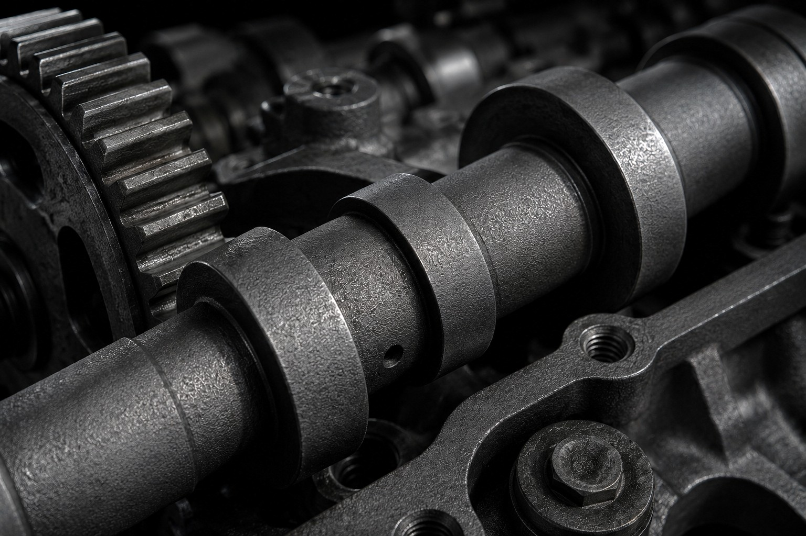
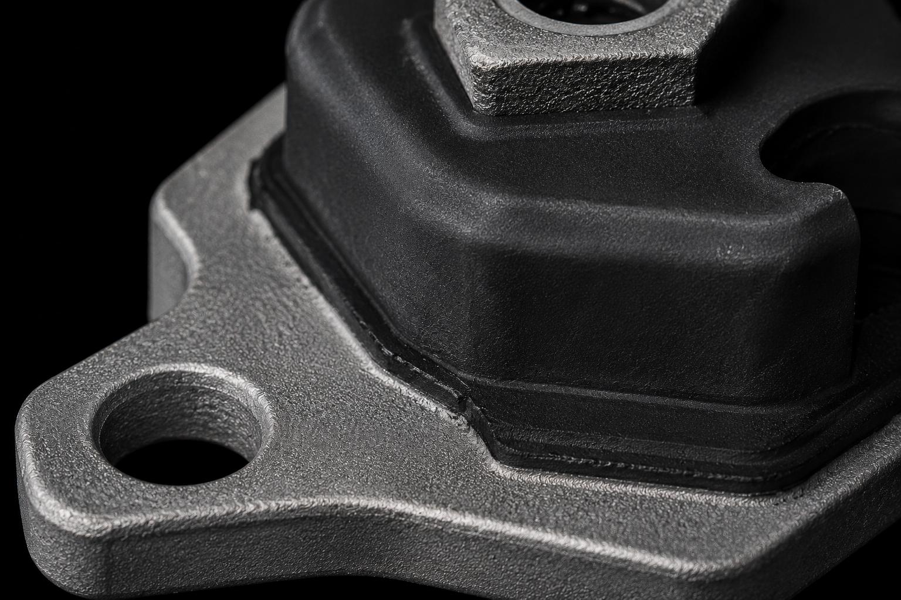
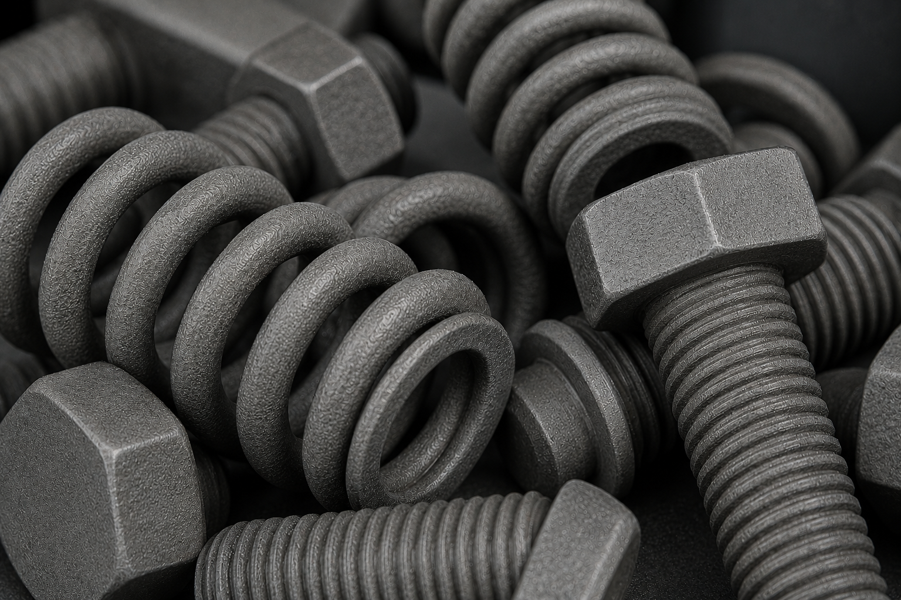

Estructura cristalina de alta porosidad. La solución técnica indispensable para la reducción de fricción en componentes de tren motriz y la base de anclaje definitiva para procesos de vulcanizado (caucho-metal) y recubrimientos posteriores.

El Fosfato de Manganeso crea una capa resistente al desgaste ideal para el "break-in" (asentamiento) de componentes internos del motor. Previene el contacto directo metal con metal en engranajes, árboles de levas y pistones durante sus primeros ciclos de vida.

El Fosfato de Zinc genera una red de micro-cristales porosos que actúan como "anclaje mecánico". Es el paso de preparación química obligatorio y más efectivo para piezas metálicas que serán sometidas a procesos de vulcanizado (soportes de motor) o aplicación de pintura E-Coat.

Debido a su estructura capilar y alta porosidad microscópica, la capa de fosfato es excelente para absorber y retener aceites anticorrosivos, ceras y lubricantes secos. Esto extiende dramáticamente la vida de almacenamiento de las piezas y su eficiencia operativa.
Controlamos minuciosamente los parámetros de baño para garantizar que el peso y el tamaño del cristal cumplan con la especificación exacta de cada cliente, ya sea para micro-fosfatizado o capas pesadas.
Nuestros ingenieros de superficies están listos para analizar tus planos técnicos y recomendarte el sistema de recubrimiento exacto que cumpla con la especificación de tu cliente.